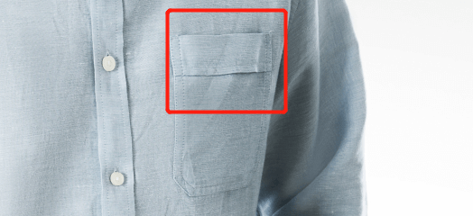

通过频率分离修复褶皱衣服 in Photoshop

之前介绍过通过高低频率分离可以处理皮肤柔化，它可以方便的单独处理颜色和反差部分。下面介绍通过高低频分离将褶皱的衣服平顺化，同时保持其原有的真实过渡部分。
用到的技术主要有：高斯模糊、apply image、linear light、mixer brush tool、patch tool
原图如下，可以看到衣服褶皱很明显：
首先复制两个图层，分别命名为 color 和 texture：
先临时关闭 texture 图层，将 color 图层执行高斯模糊：
根据实际情况，调节滑块将主体的布料细节等杂乱色彩柔化，最终基本看不出明显细节：
然后打开 texture 图层，执行 image - apply image。layer 选择 下方的 color 图层，混合模式选择 subtract，scale 选择 2，offset 设置为 128，上面设置的意思就是将 texture 图层每个像素都减去下方的 color 图层，将结果减为 0 的部分填充为 50度灰色，scale 影响轮廓范围：
然后将 texture 混合模式改为 linear light，我们会发现现在显示的图像和原图是一样的：
以上我们就将原图拆解为 color 和 texture 两部分，可以对其进行分别调整。
下面我们开始处理褶皱问题，关闭 texture 图层，然后使用 mixer brush tool 将 color 图层颜色分布均匀化处理，这个笔刷可以选取周围图片某个地方的像素，然后在其他地方可以涂抹出相似的颜色。
由于需要使用色彩选取功能，首先我们确保选取颜色的时候是 33 或 55 范围而不是单个像素。
点击色彩选取工具，将上面的设置为合适数据：
然后点击 mixer brush tool，在上面的默认数据基础上将流量调到30左右，将平滑处理降到0：
然后使用柔边笔刷，选择一个有褶皱的区域，点击 alt 选取周边一个颜色，开始涂抹需要处理的区域，处理过程中注意不同区域需要尽量选取其周边颜色进行涂抹，这样过度更加自然。涂抹过程中可以打开背景图层观察效果：
涂抹完成后打开 texture 查看效果：
可以看到很明显的效果，大部分的褶皱都没有了，但是还是可以看到一些线条：

但是在 color 图层却不明显，这些线条就是存在于 texture 图层的高频部分，需要在 texture 图层处理它们。
使用的方法就是通过污点修复工具将这些线条去掉，选中 texture 图层，这里我使用 patch tool：
选取一个需要去除的线条，拖拽到其他完好区域，查看效果：

同样的步骤处理其他所有区域，最终效果如下：
以上就完成了折痕的处理。
标签：无